Coding with Character
If you spend all day looking at code, letters, and characters—why not make it fun?
Published: 27 Jul 2021
Topics: Typography, Technology, Work
TL;DR: Monospaced fonts are no longer just utilitarian tools—they can also be playful & fun
The Beginning of My Mono Mania
There is something quirky, mechanical, and utilitarian about monospaced typefaces and I’ve admired them for years. It must have started when I was a young kid, reading weekly church bulletins that were made using an IBM Selectric typewriter.
IBM Selectric Typewriter
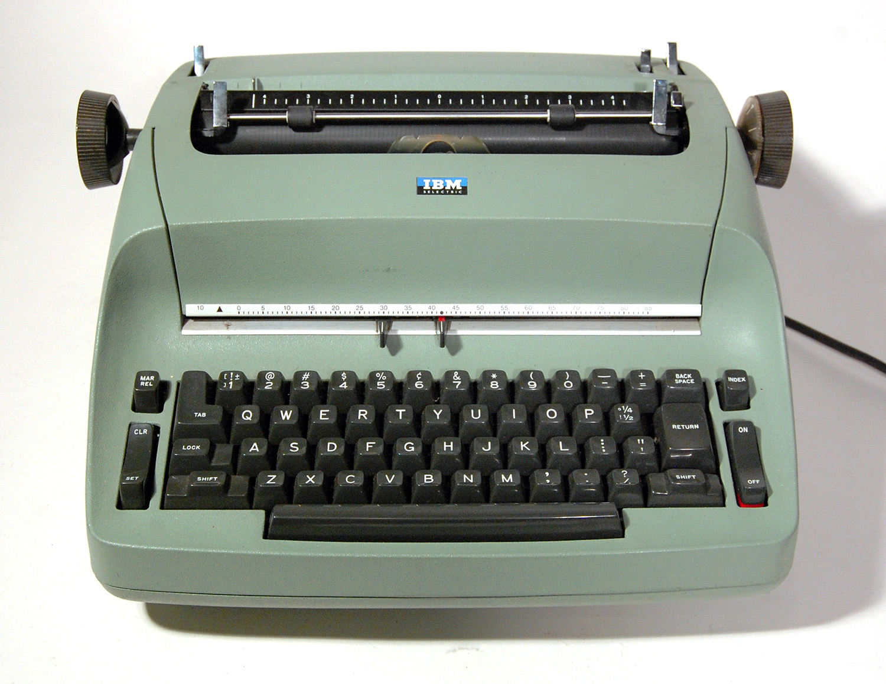The IBM Selectric Typewriter (image courtesy Steve Lodefink)
I remember once going to the church office in the middle of the week with my dad and the secretary was typing away for the Sunday bulletin. She wouldn’t let me touch the typewriter (a wise woman, indeed) but she let me watch her as she skillfully composed the page that would later be Xeroxed or possibly even mimeographed.
Seeing her swap out the “golf ball” type element with IBM Script to add personality for dull reports and announcements fascinated my hyperactive mind. I certainly didn’t know it then; but 30 years later, I would study page composition and fonts as part of my job and IBM Script would become one of my favorite typefaces of all time.
Overwhelmed by Options
Recently, Roel Nieskens (of Wakamai Fondue fame) started a Twitter thread asking for coding fonts with personality and suggestions poured in with examples of fonts with fresh takes on the monospaced genre.
Roel’s tweet that started it all
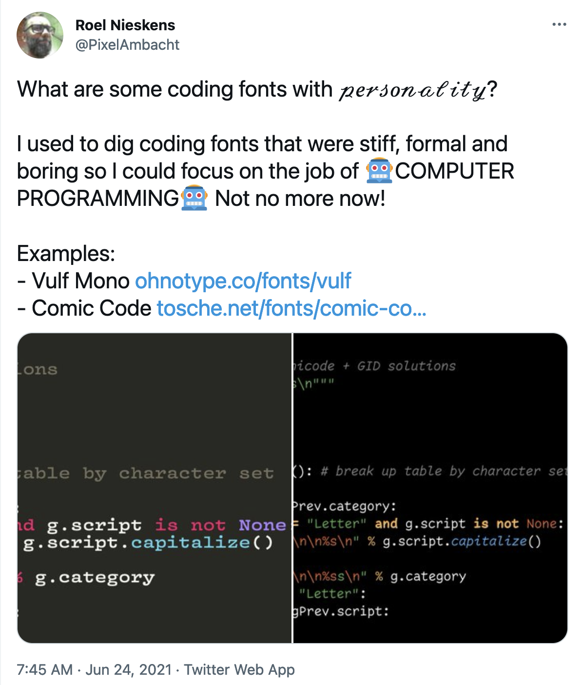After joking with Roel that he should write a blog post from the thread, I started a list of monospaced fonts that have a design aesthetic that I like. The list quickly grew from 15, to 45, to 70 and continues to grow. But now I guess the joke’s on me, since here I am writing the post…
Keeping the Scope Tight
There are hundreds (if not thousands) of monospaced typefaces out there, so this is not a comprehensive list. Most articles on coding fonts focus on technical details, so this post is specifically focused on the aesthetic design of monospaced fonts.
I’ve chosen to only showcase typefaces that have both roman and italic styles because I prefer them. I’m also not getting into the arguments about coding ligatures or power-line features—I simply have no need for them.
There are also many other typefaces with the feeling of monospace that are not rigidly fixed-width. These “Faux-Monos” have the appearance of monos, but allow wide or narrow characters to be different widths. I personally love a lot of these, so I’ll likely write a separate post about them in the future.
Constraints = Interesting Solutions
To me, there is a challenge of having a style of typography that is so specifically constrained: an M, W, :, and i have to have the same width and a user needs to easily differentiate between 1, I, |, and l along with 0 and O.
To do all of this and still create a typeface with style and a personal point of view is no easy task. But within those constraints, I’m happy to report that there is a great deal of creativity. Below is my list of typefaces that are worth investigating further (in no particular order).
Monospace Fonts with Great Personality
Operator Mono
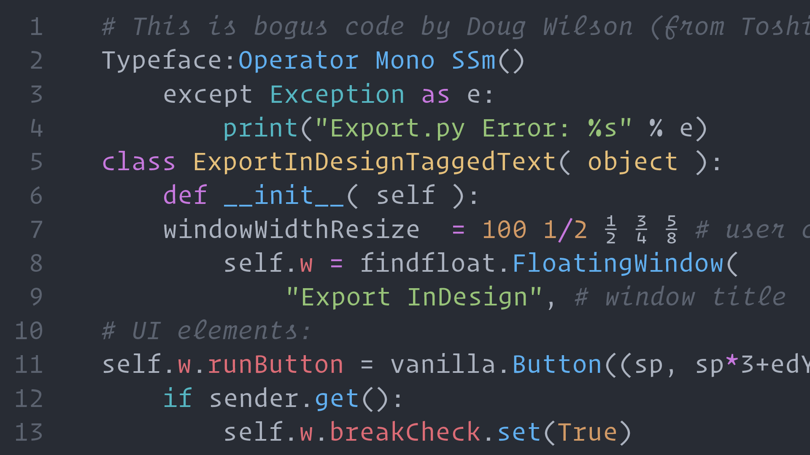I’ll start off with what I personally use: Operator Mono Screen Smart from Hoefler & Co. What sets it apart is the italic which has just the right amount of cursive elements (harking back to IBM Script) that allow comments and other parts of code to stand out without being distracting.
The “Screen Smart” part of the name refers to being “engineered for use on the web (and in programming environments) at text sizes as small as nine point” according to Hoefler & Co. I can’t comment on the technical details of if this actually makes a difference, but I know it looks great on my screen.
Favorite Characters: r, l, f, a, italic l, s, and g
Comic Code
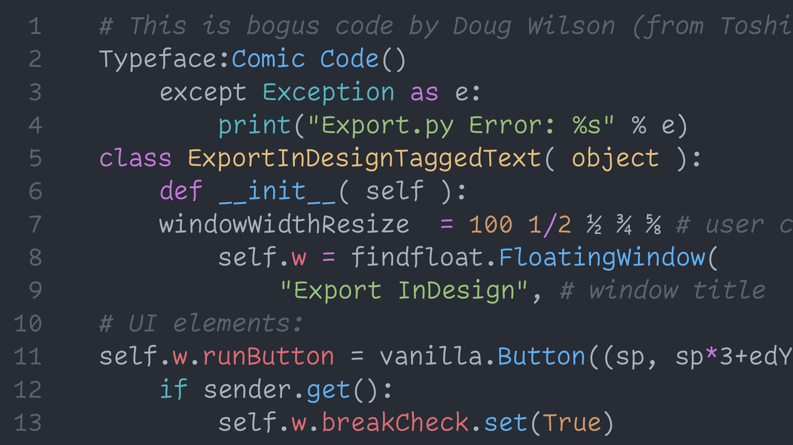My first thought: This has to be a joke, right?! Comic Sans has a bad reputation and was never meant to be used for coding—but what if…? That is what crazy mastermind Toshi Omagari seemed to ask.
He says, “Comic Code is a monospaced adaptation of the most over-hated typeface.” I haven’t asked, but I feel his thought process may have been something like this GIF.
Believe it or not, I think it actually works and certainly brings a smile—or at least a smirk—to your face.
Favorite Characters: R, C, l, r, italic f
Vulf Mono
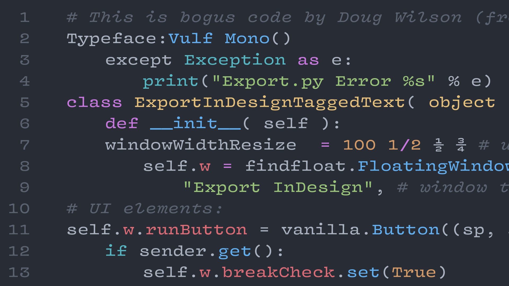“A custom monospace font for a funk band” is not a sentence that I thought I would ever write, but that is the true origin story of Vulf Mono from OH no Type Co.
Remember what I wrote above about finding creativity inside the strict constraints of the monospace genre? Well, James Edmondson has that in spades with Vulf Mono. Quirky, wide, and funky—but still totally usable for coding—makes this a personal favorite.
Favorite Characters: ½, italic i, z, %
Aglet Mono
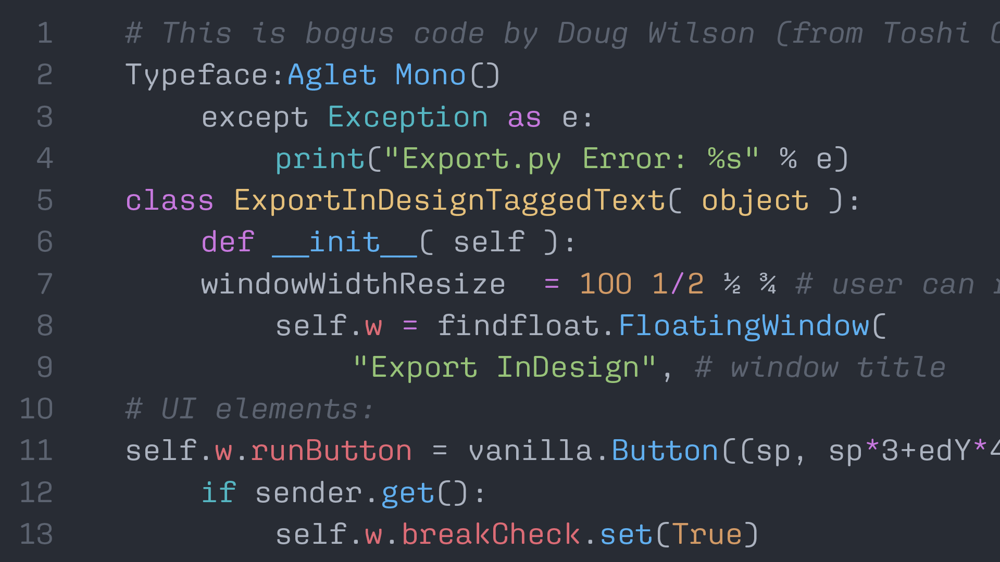
Bridging the gap between square-ish and round-ish is Aglet Mono, the monospaced member of the Aglet family from XYZ Type. At first, I wasn’t sure about the r but it grew on me, and I find Aglet Mono to have a nice, steady visual texture.
The parentheses and fractions are particularly well-designed. Speaking of well-designed, there is a fantastic promotional Riso-printed video by the talented Kelli Anderson that may also convince you to like it.
Favorite Characters: W, R, g, (), k
Cascadia Code
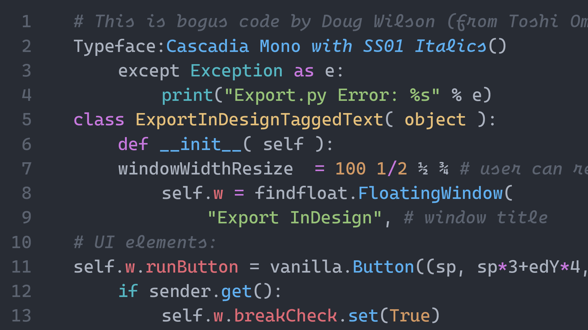
Cascadia Code is a new typeface designed by Aaron Bell for the Windows Terminal team and it is surprisingly delightful. The characters find the right balance of playful, yet invisible. There is also a non-ligature version and a Powerline version for the real nerds.
For this screen shot, I manually changed the italics to the more-playful (but arguably less familiar) Stylistic Set 01, which makes the italics more cursive in form. I personally love these cursive-leaning forms and am happy that they are included as an option.
Favorite Characters: a, 4, italic i, l, f, and s
Dico Code
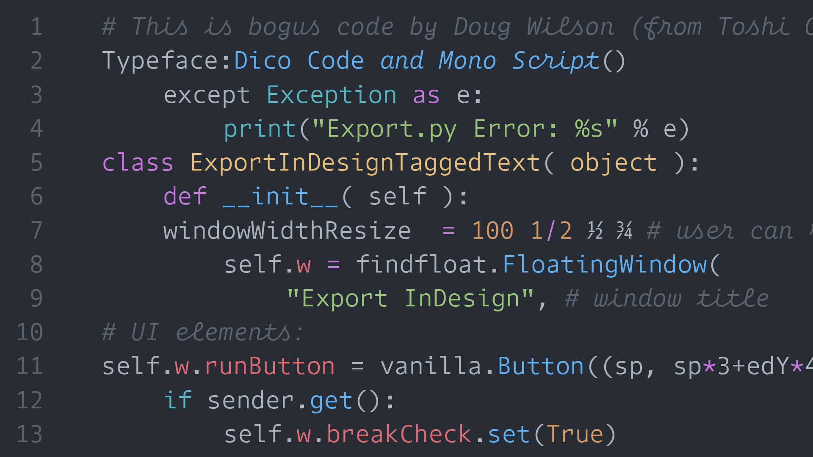
As part of the Dico superfamily (which includes Sans, Slab, Mono, Code, and Mono Slab) Dico Code and Mono Script expands the usefulness into the coding realm. With the right mix of understated practicality in the Code style and playful personality in the Mono Script, Dico is a solid choice to get outside of the default monos.
I chose to show off the “Code” style of Dico because I like how the punctuation is slightly larger which makes it easier on the eyes to differentiate in a coding context. I also chose the “Mono Script” version for the italics because it has so much style.
Favorite Characters: script f and t, i, and r
IBM Plex Mono
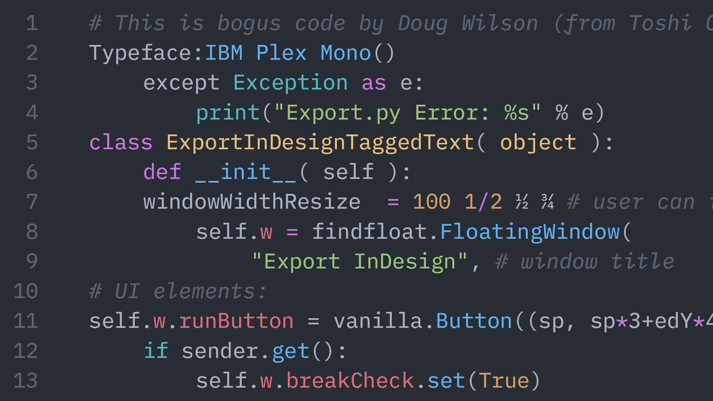
Any post that mentions the IBM Selectric typewriter would be remiss to not also mention IBM Plex Mono. To me, part of its beauty is how it fits within the larger type family of IBM Plex that has a sans, sans-condensed, and serif.
Inspired by Selectric typefaces (especially in the italics) Plex Mono blends the technical feel of typewriter fonts with a touch of personality. Since the typeface is free and open source, you are able to clone and make your own remixes or design tweaks—if you are so inclined—which is just so cool.
Favorite Characters: g, x, r, italic i, l,
Recursive Mono Casual
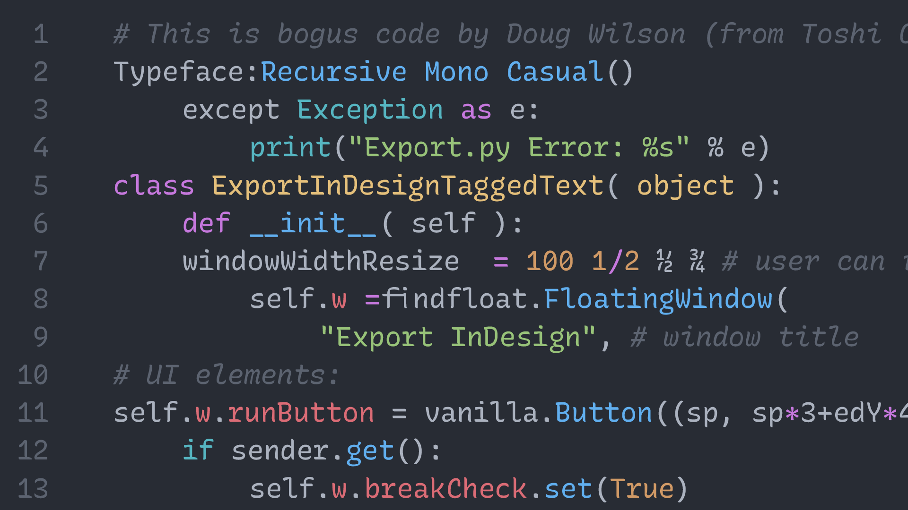
Recursive is so much more than just a monospace font, but the Mono Casual style is perfect for bringing life to your code. If the casual is a bit too casual, you can easily tweak the variable font towards the “Linear” style or anywhere in-between.
The fact that Recursive is free and infinitely customizable (click “Get Recursive” in the top right of the website) makes this a top contender. And oh yeah, the fractions are fantastic!
Favorite Characters: r, a, ½, ¾, italic l and r
Dispatch Mono
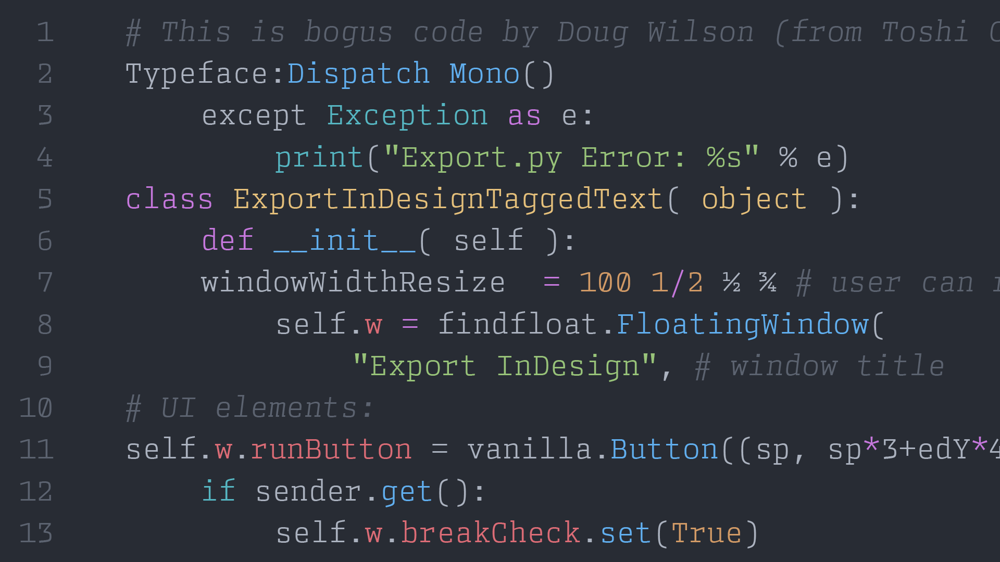
Designed as a monospaced member of the Dispatch family, Dispatch Mono is a slab-serifed monospace with good City vibes.
Originally made for designer Cyrus Highsmith’s own personal use on shipping labels and for printing out PostScript code, Dispatch Mono is now available to bring a bit of “industrial strength” to your coding.
Favorite Characters: T, a, g, p, and f
Gintronic
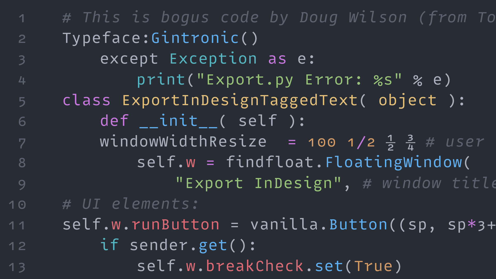
As the marketing materials state, Gintronic is “Designed to not fatigue your eyes while working habitually with code … and flavoured with a jovial and non-techy character.” This typeface has grown on me and I can’t wait to try it out.
Also, a little birdie (the designer himself) told me that a new, updated version of Gintronic (with a new name) is in the works and should be out soon.
Favorite Characters: r, l, g, i, D, and &
Array Mono
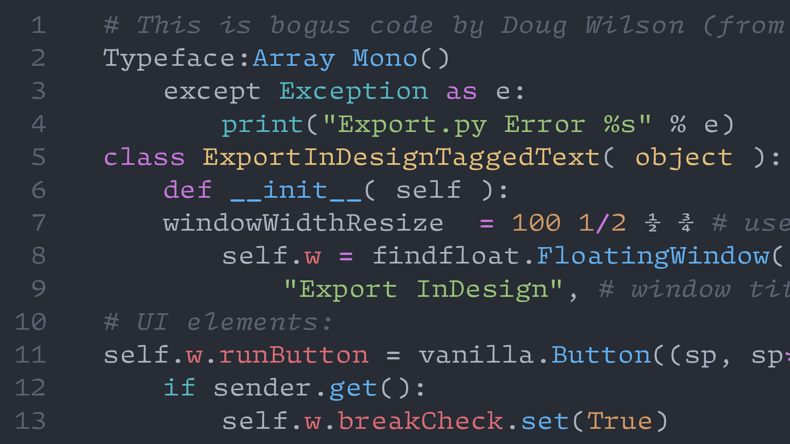
Bringing a touch of unconventionality and DIY aesthetic to a monospace font, Array Mono makes for a lively coding experience.
For some crazy reason, the designer James Hultquist-Todd wanted to try and combine classic, Renaissance type styles with a monospace. Honestly, I barely understand what that means but, you know what? I think it might actually work.
Favorite Characters: T, g, %, r, and E
Arnold
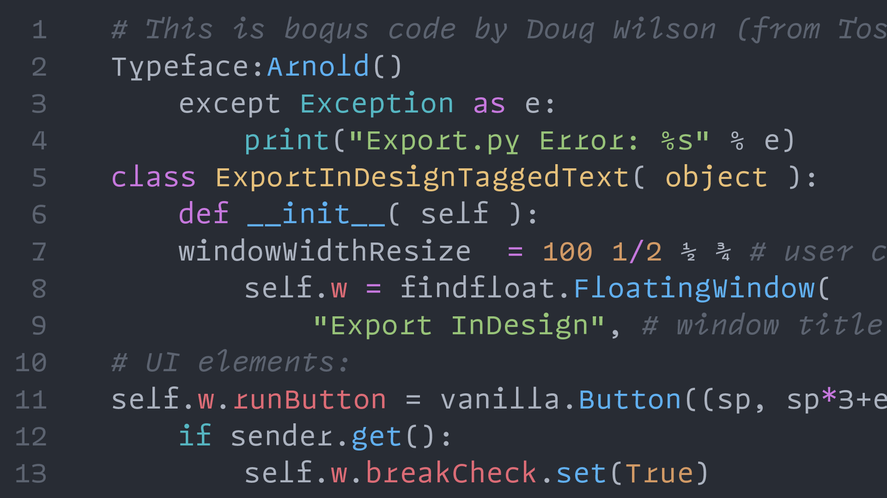
I’m a big fan of Future Fonts. It’s a great place for designers to have an idea, get it out into the world, and see how people react. One of the gems on there is Arnold by Rüdiger.
Designer Philipp Neumeyer admits, “Arnold was never conceived as a generic coding font featuring meticulously calculated width to save screen space or to be exceptionally readable. Arnold is what it is; kind of strange, but also fun.” Personally, I love it and think it’s great.
Favorite Characters: r, f, italic T, I, and l
Cartograph
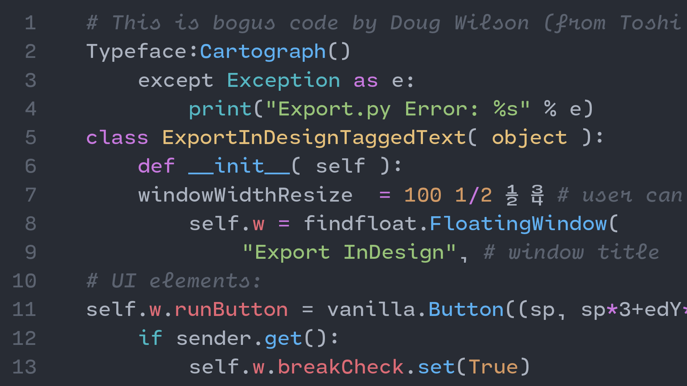
Subtly-rounded characters give Cartograph its own human touch and nice visual appeal on screen. The playful italic characters with cursive forms bring further distinction and personality when used for coding.
With reasonable pricing and generous license terms for both desktop and webfonts, this is certainly a typeface worth checking out.
Favorite Characters: a, ,, italic i, s, and f
Input Narrow Mono
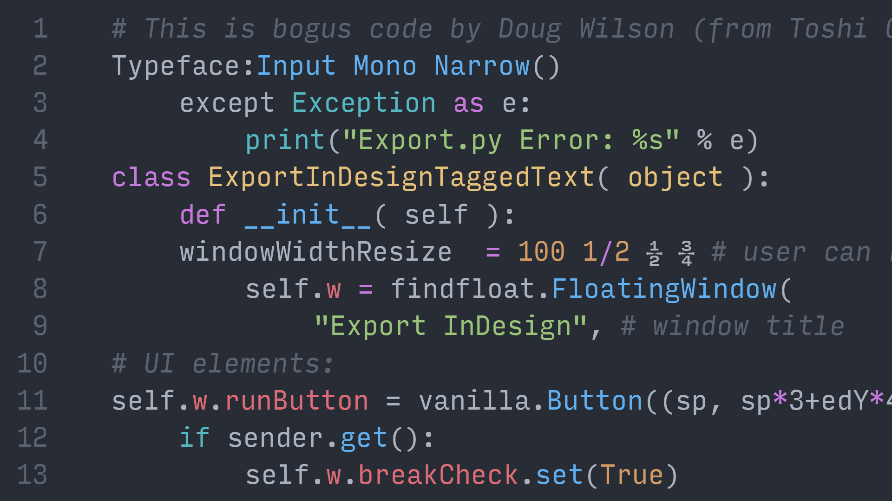
Input Mono was my font of choice for coding (before switching to Operator Mono) and is such a great typeface. The beauty of Input Mono is the customization options available to you, the user—and all for free! Choose from four different widths, multiple styles, and character defaults.
I highly suggest giving Input a try and the fact that it is made by one of the nicest people in the type industry is simply icing on the cake. Make sure to click the “Customize your download” on this page to get exactly what you want.
Favorite Characters: a, r, g, 1, and y
Logic Monospace & Script
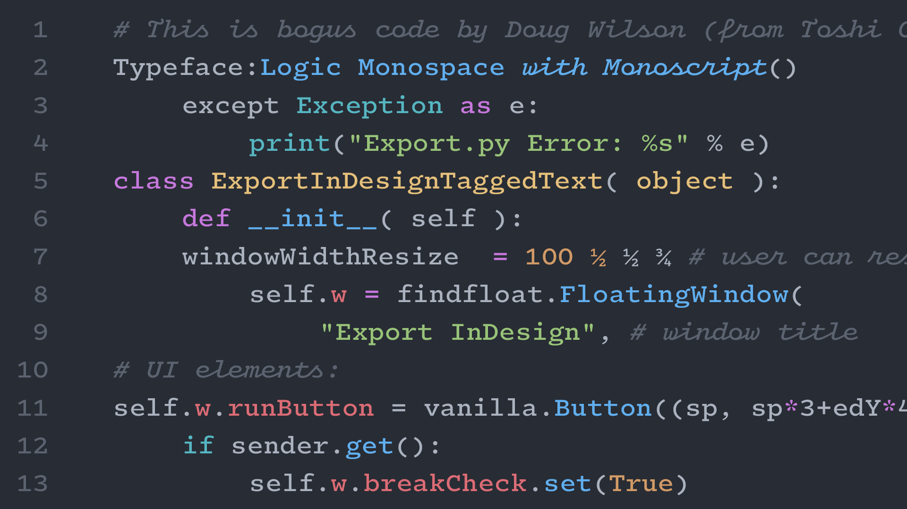
Leaning into the “technical” look of monospaced fonts, Logic Monospace and Monoscript brings life and warmth to the screen. Inspired by Advocate for the IBM Selectric and the ubiquitous Courier, it has the visual appearance of a screenwriter’s script.
Logic Monoscript is especially fun; as it claims to be one of a few connecting monospace scripts in existence and brings such a unique feeling to comments in code.
Favorite Characters: g, E, r, script T, e, l, and r
GT Maru Mono
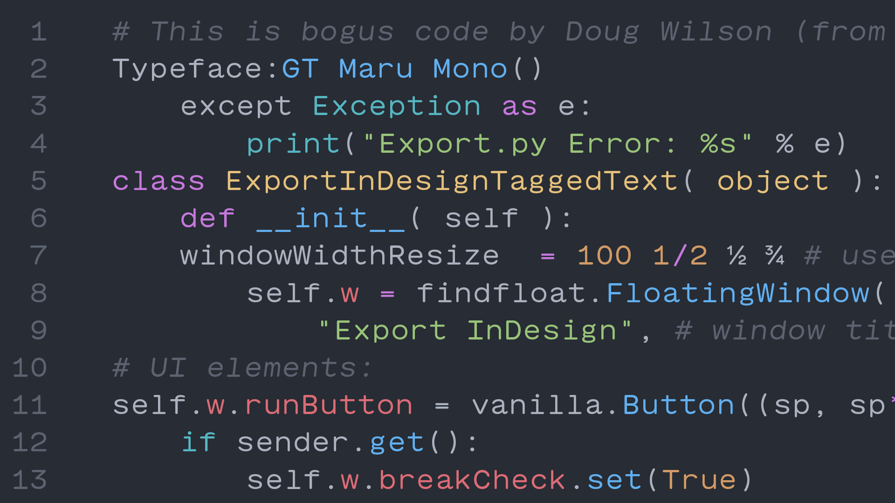
As a member of the large Maru family, GT Maru Mono allows code to have a little fun. Rounded, playful, and quirky characters—apparently inspired by the English letterforms found in Japanese signage—still fit into the strict monospaced grid but with a bit of style.
The italics are simply oblique forms—rather than fully-italic—which is either a positive or negative, depending on your personal preference, but I hope by this point in the post, you have an opinion!
Favorite Characters: g, M, W, and 1
Monoflow
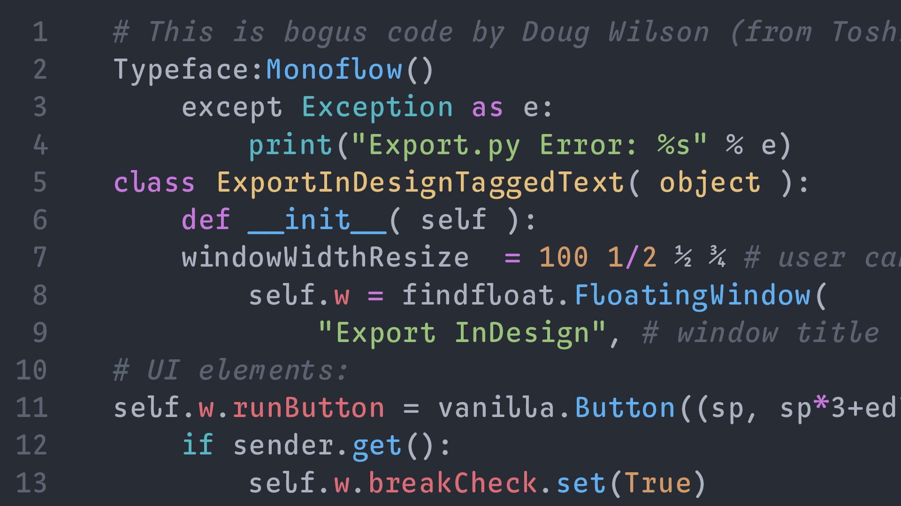
The final typeface in this post has an interesting goal: “To significantly improve the readability and aesthetics of monospace typefaces.” Monoflow does this by what the designers call “contextual repositioning,” which means that it automatically adjusts the individual letter spacing as you type.
Obviously, monospace fonts are defined by their fixed width, but Monoflow repositions characters inside of those fixed widths to make the “color” of your text more visually appealing. It is an interesting idea and I hope more people play with this idea in the future.
Favorite Characters: l, r, g, 4, italic x, y, and z
Honorable Mentions
There are seriously so many good monospace fonts out there that I couldn’t feature in this list. So, if none of the above suit your fancy, give these a look and I hope you find something that works for you.
Overpass Mono from Delve Fonts
Pitch from Klim Type
Covik Sans Mono from OH no Type Co
Codelia from Tabular Type
Coordinates from Process Type
Recipient from Process Type
Pentameter from Occupant Fonts
GT Flexa Mono from Grilli Type
League Mono from League of Moveable Type
Adelle Mono from Type Together
Matter Mono from Displaay
Triplicate from Matthew Butterick
JetBrains Mono from Jet Brains
Atlas Typewriter from Commercial Type
Lab Grotesque Mono from Letters from Sweden
MD IO from Mass-Driver
Valentine from Lineto
Ellograph from Connary Fagen
Mabry Mono from Colophon Foundry
Garton from Colophon Foundry
System 85 from Colophon Foundry
Italian Plate No. 1 Mono from Play Type
Syke Mono from The Northern Block
Nitti from Bold Monday
Simplon Mono from Swiss Typefaces
Ballinger Mono from Signal Foundry
Iosevka from Belleve Invis
Anonymous Pro from Mark Simonson
Hack from Source Foundry
Victor Mono from Rune Bjørnerås
Fira Mono from Carrois Apostrophe
Jornada Mono from DSType
Xanti Typewriter from CAST Foundry
Azo Mono from R-Typography
NT Bau Mono from Nodo Type Foundry
Zeitung Mono from Underware
Diurnal Mono from Typotheque
Bodoni Egyptian Mono from Shinntype
Gräbenbach Mono from Camelot
Martian Mono from Evil Martians
Elma Mono from Philipp Neumeyer
Karl Mono from Source Type
Adapter Mono PE from Rosetta Type
Dossier from Tabular Type
if you want to get really wild, check out these monos that push the boundaries of what is “usable” for a monospaced font.
Sarcastic Robot from Chank Fonts
Capibara Mono from Bold Monday
Gridlite from Rosetta Type
The Future Mono from Klim Type
Show Me the Mono from Mota Italic
Panoptica from Shinntype